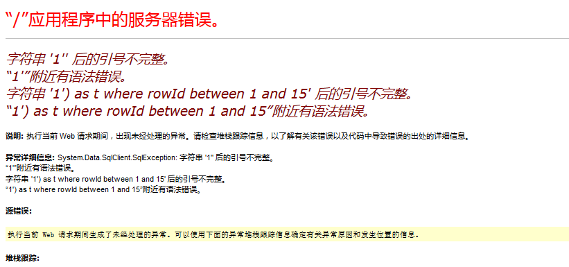
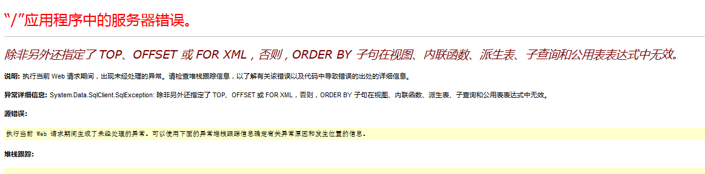
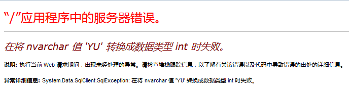
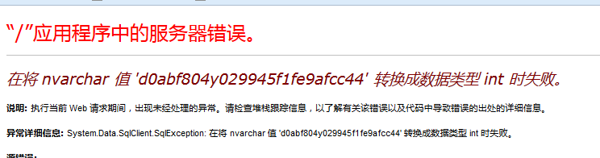

0x00
使用WhatWeb来获取网站的一些基本信息
对资源列表页面随手进行测试发现存在注入漏洞。
一般网站可能会对用户输入进行过滤，但是对于自己预置的参数值就会放松警惕，此处的area为影片的国家。
|
|

尝试order出错
注：--后要接一个空格，或者直接使用#注释符，此处为sqlserver,不能使用#

0x01
既然能显示错误，那么考虑使用类型转换报错来返回结果。

直接猜存在admin表，猜到字段user和pwd
但是突然发现有WAF，过滤了一些关键字。
多次测试后发现可通过URL编码转换绕过。如：select改变一个e为 URL编码%65，使用s%65lect即可

结果不可解。
0x02
换思路
考虑命令执行
直接添加用户，提权，然后远程连接，发现没有成功。
但是，执行命令又不能直接在页面回显。
考虑把回显写到表中，然后通过读取表中的内容获得结果。
建个新表
执行命令，并把结果写入到表中
直接读取只能读一行，使用FOR XML，可一次性获取全部内容
发现权限不够。
0x04
不能一步到位，就退而求其次，上个一句话
一开始想着写在list页面的同一个目录下
无奈发现，写入后，怎么都找不到。
经指点知，可能采用的是SVM结构的网站，最有效的写入路径应该是存储图片的文件夹
注：在cmd中使用>会被解析为输出符号，要想使用必须要用^包裹
菜刀连接